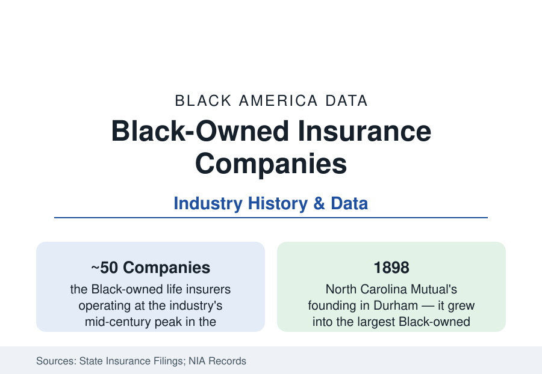

Black Business
Black-Owned Insurance Companies: The Giants of Black Wall Street's Age
North Carolina Mutual was once the largest Black business in America. The insurance industry's Black tier — its golden age, its consolidation, and its survivors. The historical data.

For the middle of the twentieth century, the largest Black businesses in America were not record labels or newspapers — they were insurance companies. Denied coverage or sold it at rigged prices by the white industry, Black communities built their own carriers: at the mid-century peak, roughly fifty Black-owned life insurance companies operated nationally, collecting weekly premiums door to door, employing thousands of agents, and anchoring the Black Wall Streets of Durham, Richmond, Atlanta, and Chicago. Their consolidation into a handful of survivors by the century's end is the business section's most complete rise-and-integration arc — the industry integration built, and the industry integration cost. This article reads the insurance file.
The Golden Age: Premiums, Agents, and Black Wall Street
The industry's founding logic was actuarial exclusion: the major carriers either refused Black applicants or priced them on fraudulent mortality tables (the industrial-policy scandals of the era — Frederick L. Hoffman's 1896 'Race Traits' treatise giving the exclusion its pseudo-scientific cover, its data since demolished and its influence documented for half a century of pricing). The Black industry answered at every scale: the fraternal and burial societies first (the Grand Fountain of the United Order of True Reformers' bank-and-insurance empire of the 1880s-90s Richmond), then the stock and mutual companies — North Carolina Mutual (1898, Durham; by mid-century the largest Black business in the country, its Parrish Street headquarters the literal anchor of Black Wall Street), Atlanta Life (1905, Alonzo Herndon's barber-shop fortune institutionalized), Golden State Mutual (1925, Los Angeles), Supreme Life of Chicago, Mammoth Life of Louisville, and dozens more in the National Insurance Association's rosters. Their business model was industrial insurance — the weekly dime-and-quarter premium collected at the door by the agent force (the companies' true distribution genius: thousands of Black agents, a middle-class profession in itself, the agent's route the community's financial nervous system — the debit system whose economics the historians have reconstructed in detail), funding burial policies and small whole-life contracts for households the majors would not touch.
Integration's Price: The Consolidation Ledger
The industry's decline is the integration paradox in its purest business form: when the majors began competing for Black customers in the 1960s and 70s — with their scale, their television budgets, and (at last) honest tables — the Black carriers' protected market evaporated while their capital disadvantage (a century of small policies, conservative reserve rules, the real-estate portfolios of segregated markets) remained. The consolidation data run across the following decades: mergers into each other, demutualizations, acquisitions by white carriers (the books of business absorbed; the brands retired), and failures in the hard years — the count falling from the fifties to single digits by the 2000s in the trade counts, with North Carolina Mutual's 2019 regulatory rehabilitation the era's symbolic entry (the giant placed under state supervision, its policies protected, its independence ended in all but name). The agent force dispersed into the majors' diversity-era hiring — the workforce file absorbing what the ownership file lost — and the headquarters buildings (Parrish Street's surviving facades, Atlanta Life's Herndon Home) passed into the preservation record.
The Survivors and the Modern Tier
The current census is small and specific: a handful of Black-owned life and health insurers still operating (in the trade counts, names that have carried since the golden age alongside newer entrants), the Black-owned agencies and brokerages of the ABS's insurance slice (independent agencies — a larger, growing tier, selling the majors' products rather than carrying risk — the ownership form the modern industry structure rewards), the Black insurance executives' tier inside the majors (the chief-actuary and C-suite counts the industry diversity reports track in the low single digits — the National African American Insurance Association, founded 1997, as the profession's organized presence), and the actuary pipeline itself (Black actuaries among the scarcest credentialed professionals in this atlas — the fellowship exams' pass data and the society counts putting the share near one percent, the profession's own pipeline programs the current response). The market the founders served has its modern data too: LIMRA's consumer studies record Black adults' life-insurance ownership at rates equal to or above the national average in several waves — the burial-policy culture's descendant behavior, the industry's most loyal customer base, now buying substantially from the giants that absorbed its own.
Reading the Insurance Data
Fifty companies to a handful, the largest Black business in America to a rehabilitation order: the insurance file is the business section's essential history — proof that the community built at institutional scale under total exclusion, and the record of what the open market did to institutions built for a closed one. The policies never lapsed; the protection the founders sold their neighbors is still being paid out by somebody. The data ask the only question they ever ask: whose name is on the building where the reserves are kept.
More in Black Business
Black-Owned Businesses: Counts, Receipts, and the Representation Gap
About 161,000 Black-owned employer firms and three million solo ventures: how the Census Bureau counts Black business ownership, where firms concentrate, and the gap between population share and business share.
Black Median Net Worth: The Wealth Gap in Federal Reserve Data
The Federal Reserve puts Black median family net worth at $44,900, against $285,000 for White families — about 16 cents on the dollar. The widest gap in economic data.
Black Buying Power: The $1.8 Trillion Consumer Economy
Black buying power is estimated at about $1.8 trillion — larger than the economy of most nations. What the figure measures, who produces it, and what it buys.
Source: Company records and state insurance department filings; National Insurance Association history; U.S. Census Bureau Annual Business Survey; Black business history scholarship.